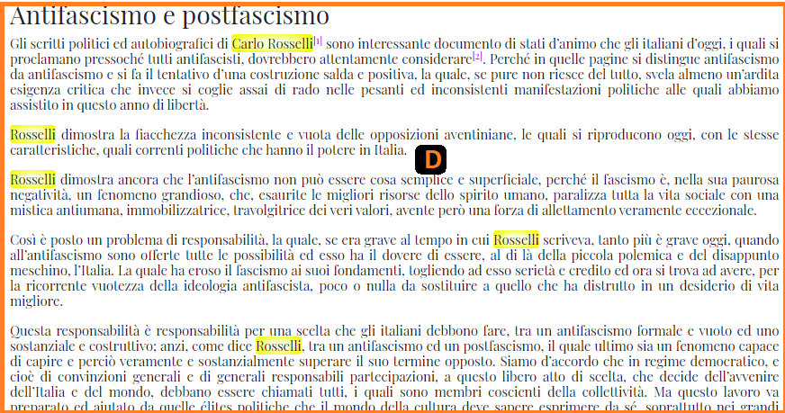

KwicKwocKwac 1.0
Guida all'ambiente di marcatura
Nota: Questo documento è un lavoro in corso che continuerà ad essere sviluppato, aggiornato e perfezionato. Qualsiasi tipo di feedback è benvenuto. Eventuali commenti o richieste possono essere mandate all’indirizzo di posta elettronica aldomoro@unibo.it.
Introduzione
KwicKwocKwac 1.0 (KwicKK) è un ambiente Web con l’obiettivo di fornire ai ricercatori uno strumento semplice e intuitivo per arricchire il testo di documenti in formato digitale attraverso funzionalità di marcatura e metadatazione semi-automatiche. Le principali funzionalità offerte da KwicKK sono:
- Marcatura degli elementi presenti all’interno del testo del documento (menzioni a persone, organizzazioni, luoghi, riferimenti bibliografici e citazioni);
- Riconoscimento automatico delle tipologie di note presenti nel testo (note del ricercatore e note di Moro);
- Disambiguazione dei riferimenti generici alle entità a cui il documento si riferisce (es. termini come “Presidente del Consiglio”, “Papa”, etc.);
- Riconciliazione con i dati presenti su Wikidata per disambiguare le entità marcate e connetterle al Web seguendo il modello Linked Open Data (LOD);
- Metadatazione del documento (es. tematica del documento, tipologia del documento, etc.);
- Download del documento marcato in più formati (es. HTML e TEI/XML).
Interfaccia principale
La Figura 1 mostra l’interfaccia principale dell’ambiente.
L’interfaccia si articola in cinque sezioni principali:
-
una barra di navigazione (Figura 2), che presenta le seguenti funzionalità:
- Cerca documenti: barra di ricerca che permette la ricerca filtrata e la selezione dei documenti caricati;
- Operazioni: attivazione/disattivazione della visibilità della marcatura, aggiunta dei metadati (vedi Inserimento dei metadati );
- Salva documento: salvataggio del documento modificato;
- Modalità editing: l’attivazione/disattivazione della modalità editing (vedi la sezione Modalità editing);
- Carica documento: caricamento di uno o più documenti nell’ambiente di marcatura;
- Profilo utente in cui l’utente può cambiare la password e uscire dall’applicazione;
- Documentazione in cui l’utente può trovare le istruzioni fondamentali per utilizzare KwicKK;
-
una barra di strumenti (Figura 3) che diventa visibile ed utilizzabile in modalità editing. La
barra di strumenti è dotata delle seguenti funzionalità:
- Marcatura del testo selezionato (vedi la sezione Modalità editing.);
- Estendi selezione a parola intera: attivazione/disattivazione dell’estensione automatica della marcatura all’intera parola nel caso in cui l’utente seleziona solo una parte di essa;
- Evidenzia tutte le istanze: attivazione/disattivazione dell’estensione automatica della marcatura a ogni stringa di testo presente nel documento uguale alla stringa selezionata dall’utente;
-
Stato di marcatura: modifica dello stato di lavoro del documento tramite
clic sull’icona colorata. Ci sono tre possibili valori tra cui scegliere, indicati da
altrettanti colori:
- Da avviare: il documento è stato caricato sull’applicazione;
- In corso: il ricercatore sta lavorando sul documento;
- Terminato: il ricercatore ha finito di lavorare sul documento;

- un pannello delle entità (Figura 4), contenente una serie di tab disposti orizzontalmente. Ogni tab corrisponde ad una determinata categoria di marcatura intratestuale presente nel testo. L’attivazione di un tab mediante clic del mouse rende visibile un indice di tutti gli elementi marcati nel testo e appartenenti a quella determinata categoria. (vedi Manipolazione degli elementi intratestuali);
- una sezione contenente il testo del documento da annotare (Figura 5); 
-
una sezione contenente le seguenti utilità aggiuntive (Figura 6), organizzate in pannelli
attivabili tramite clic sui rispettivi tabs:
- un pannello Scarti, in cui è possibile spostare elementi contenuti nel pannello delle entità tramite trascinamento e rilascio della selezione, per tenerli in disparte in attesa di ulteriori operazioni;
- un pannello Info contenente un corpo di testo informativo che si aggiorna automaticamente quando l’utente clicca su un elemento sincronizzato con Wikidata;
- un pannello Cestino in cui è possibile spostare elementi per eliminarli. Il pannello Cestino si comporta come la funzionalità “Cestino” dei comuni sistemi operativi dotati di interfaccia grafica (vedi Gestione degli errori).
Funzionalità principali
Accesso
Per accedere all’interno dell’ambiente di marcatura in modalità editing il ricercatore deve inserire il proprio nome utente e la propria password (ricevuti per email) nei rispettivi campi (Figura 7).
Caricamento e selezione dei documenti
Una volta eseguito l’accesso, l’utente può caricare i propri documenti sulla piattaforma cliccando sull’icona nell’angolo in alto a destra nella barra di navigazione. Nella finestra modale che si apre (Figura 8a), l’utente deve:
- inserire i dati necessari nel modulo di caricamento del documento (numero della sezione, numero del volume, numero del tomo del documento);
-
specificare il formato del documento, cliccando su
.docxo.html; - cliccare sul bottone Scegli file per selezionare uno o più file che si intende caricare;
- cliccare sul bottone Svuota per annullare l'operazione di caricamento; altrimenti
- cliccare sul bottone Carica file per completare l’operazione di caricamento (Figura 8b). Si noti la possibilità di modificare il nome del documento, qualora siano presenti più documenti con lo stesso titolo.
Dopo aver caricato un documento sulla piattaforma, l’utente può selezionare il documento cliccando sul nome del documento che appare nel menù a tendina attivabile attraverso un click o una ricerca nella barra di ricerca (Figura 8c) dotata delle seguenti funzionalità:
- filtri di ricerca a seconda dello stato di marcatura del documento;
- lista dei documenti caricati;
- eliminazione dei documenti selezionati tra quelli caricati.
Modalità editing
Marcatura
L’utente in modalità editing può marcare due tipologie di elementi intratestuali, selezionabili nella barra degli strumenti (vedi Figura 9):
- Menzioni a Persone (es. “Aldo Moro”), Organizzazioni (es. “Società della gioventù cattolica italiana”) e Luoghi (es. “Bari”);
- Riferimenti suddivisi in Riferimenti bibliografici e Citazioni;
Per marcare un elemento intratestuale, l’utente deve selezionare la stringa di testo che costituisce l’elemento da marcare (es. "Aldo Moro") e cliccare sul bottone della rispettiva categoria intratestuale a cui appartiene l’elemento (es. “Persone”). La marcatura si esprime a livello di interfaccia sotto forma di evidenziature la cui colorazione cambia a seconda della categoria di marcatura.
Manipolazione degli elementi intratestuali
Gli elementi intratestuali (Menzioni e Riferimenti) vengono registrati nella colonna a sinistra e, più precisamente, nel pannello delle entità, suddiviso in varie categorie (Figura 10).

L’utente può interagire in diversi modi con le menzioni e i riferimenti contenuti nel pannello delle entità. Per esempio, l’utente può integrare a proprio piacimento menzioni differenti che si riferiscono alla medesima entità (es. “Azione Cattolica Italiana”, "Azione Cattolica" e "A.C.I.", vedi Figura 11a). Un elemento, una volta annotato, viene automaticamente aggiunto al pannello delle entità sotto la sua rispettiva categoria. A questo punto, l’utente può selezionare e integrare una menzione o un riferimento con un altro tramite un meccanismo di trascinamento della selezione nel termine principale, che è quello realmente rappresentativo di quella menzione. Il risultato di tale operazione è l’integrazione del primo elemento con il secondo (Figura 11b).
L’utente può inoltre cliccare sul singolo elemento per visualizzare la sua lista di occorrenze all’interno del testo. Cliccando una volta sulla riga corrispondente ad un'occorrenza, è possibile navigare in automatico alla sua posizione all’interno del testo. Inoltre, ogni occorrenza è a sua volta trascinabile, permettendo l'integrazione con un altra menzione, o la sua cancellazione (vedi Gestione degli errori), se necessari (Figura 11c).
Inoltre l’utente può segnalare le occorrenze che indicano una menzione generica alla rispettiva entità (es. l’espressione “Papa” che si riferisce a “Pio XI” e quella che si riferisce a “Pio XII”, vedi Figura 12a). Per disambiguare una menzione generica è sufficiente cliccarci sopra due volte. Questa operazione evidenzia la menzione generica in modo da distinguerla dalle altre (Figura 12b).
Infine, ogni elemento è accompagnato da icone con funzionalità differenti:
- un conteggio del numero totale di istanze dell’elemento marcato (es. 9);
- un checkbox che indica se all’elemento è associato un Wikidata ID;
-
un bottone che l’utente può cliccare per rendere visibili le seguenti informazioni
relative all’elemento (Figura 13a):
- l’etichetta che identifica l’elemento. L’utente può cercare il Wikidata ID in base all’etichetta (modificabile secondo necessità) cliccando sull’icona e selezionando l’opzione corrispondente, se disponibile (Figura 13b). La selezione di una voce nel menu a tendina riempie i valori di Wikidata ID e Treccani ID, fatto salvo che per Treccani ID questo sia presente, altrimenti viene segnalato come non presente. Qualora l'utente volesse cambiare il valore inserito può selezionarne un altro, modificare l'etichetta e ripetere la ricerca, oppure non selezionare alcun valore se nessuno fra quelli presentati è adeguato all'etichetta che sta cercando.
- il valore con cui viene ordinato all’interno della lista di entità;
- l’identificatore Wikidata (Wikidata ID) associato all’elemento;
- il Treccani ID associato a quell'entità, se disponibile. Qualora il link Treccani sia valorizzato dentro Wikidata, lo stesso appare cliccabile. È possibile che Wikidata non sia stato popolato con il valore del Dizionario biografico per la persona che sta cercando. In questo caso il campo viene popolato con la voce "Non rilevato".
. Il suo inserimento è segnalato dal check verde. Non ha un Treccani ID disponibile e quindi non viene rilevato.")
Gestione degli errori
KwicKK permette una pronta gestione degli errori da parte dell’utente tramite l'utilizzo della funzione Cestino. Per annullare la marcatura di un elemento è sufficiente trascinare l’elemento nella sezione Cestino (Figura 14a).
Per svuotare il cestino e quindi cancellare definitivamente le marcature in esso contenute (Figura 14b), è sufficiente:
- cliccare due volte sul Cestino e confermare di voler portare a termine l'operazione; oppure
- cliccare sulla voce di navigazione Operazioni e selezionare Svuota cestino.
Inserimento dei metadati
Per aggiungere i metadati l’utente deve cliccare sulla voce di navigazione Operazioni e selezionare Aggiungi metadati. Tale operazione apre una finestra contenente un modulo che l’utente deve compilare inserendo i valori corretti (Figura 15).
In particolare, il modulo di inserimento dei metadati è articolato come segue:
- Numero del documento: un numero di tre cifre da 001 a 999, da inserire in ordine cronologico crescente (es. il primo documento avrà 001, il secondo 002, ecc.);
- Ruolo dell’autore: il ruolo ricoperto da Moro in quel momento;
- Ricercatore curatore: il vostro nome;
- Abstract: la descrizione del documento preparata dal ricercatore;
- Tipologia del documento: una o più categorie a cui il documento appartiene;
- Tematica del documento: una o più categorie a cui il soggetto del documento appartiene;
- Stato del documento: indica se il documento è stato pubblicato/edito oppure se invece è non pubblicato/inedito;
- Riferimento bibliografico / Segnatura archivistica: una o più indicazione di provenienza del documento (riferimento della fonte editoriale, se edito; segnatura archivistica se inedito);
- Luogo dell’evento: nome del luogo in cui è avvenuto l’evento descritto nel documento;
- Data dell’evento: data ( giorno-mese-anno oppure solo anno ) in cui è avvenuto l’evento descritto nel documento;
- Note aggiuntive.
L’utente deve seguire le indicazioni presenti sotto le voci dei vari metadati. Una volta completato il modulo, i metadati devono essere salvati cliccando sul pulsante Salva situato in fondo al modulo.